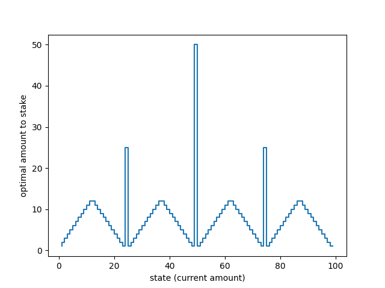
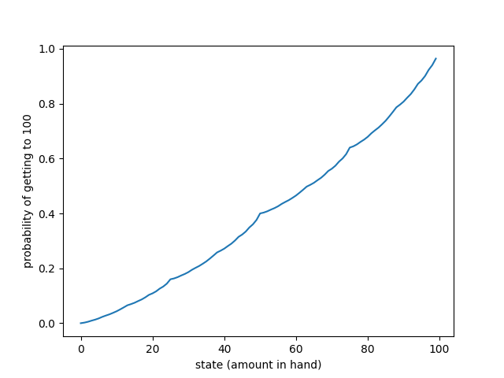

You have a certain amount < 100 dollars with you. On multiple coin tosses, for a single coin toss you can stake an amount to reach the goal of 100 dollars. Heads you win the amount you stake and tails you loose the amount you stake. Game ends when you hit 0 dollars. The probability of a heads is 0.4 .
You are given an optimal plan of action (graph below) for any start value to reach a 100 and are asked

Why does the optimal policy have a curious form?
Notes:
In the literature preceding the actual question, the actions are limited to staking amounts in the range of 0 to min(s, 100-s) where s is your current amount. ( THIS IS IMPORTANT )
For example, if you have 70 dollars on hand, theoretically you can stake any amount from 0 dollars to 30 dollars (as per the above rule)

A graph depicting the odds of getting to the goal from your current state
Definition of a Policy:
A function that given your current state gives out an action to take you to the next state (this can be deterministic or stochastic. For this problem, this is deterministic in nature)
A look at how bad 0.4 chance of heads is in terms of winning
To get a sense of how bad things are in terms of winning, we plot the number of wins per thousand games for various starting amounts for three different types of coin toss distributions
The strategy used here is one where we go all in, all the time. I choose to take this as my baseline in the constrast against the optimal policy (shown later on)
Some thoughts on a possible optimal solution
The optimal solution takes into consideration that loss is inevitable, and takes advantage of this. (something that the baseline cannot do)
The strategy on heads should be to try to get to 100 with minimal steps because you're likely to lose because the odds of you winning in a sequence is stacked against you
Again since you're more likely to lose, you want to make sure that your losses are funneled away from a Knock-out to positions that might contribute to a potential win on the next toss.
From the above you'd want to concentrate your sweet spots to a few places where you drive in a winning shot in one go OR if not that be a jump spot to a winning spot
You want to make sure there is enough distance between these sweet/jump spots. And the reasoning for that follows below
You'd want to make sure that every state that cannot possibly reach the goal in one sweep somehow gets closer to the sweet/jump spots on win or lose
How the above points translate to the optimal policy in question
you'd want to concentrate your sweet spots to a few places where you drive in a winning shot in one go OR if not that be a jump spot to a winning spot
states 50 , 75 and states ≥ 88 are sweet spots
states 50 and 75 are special in that they contribute to the strategy of other states. Coincidentally a failure on 75 leads to us ending up on 50. A sweet spot assisting another sweet spot!
25 is a jump spot as it serves as a spot to shuttle to the sweet spot 50. I call attention to 25 as a jump spot as it serves this purpose to different states on win and to different states on loss
You'd want to make sure that every state that cannot possibly reach the goal in one sweep somehow gets closer to the sweet/jump spots on win or lose
If you look at states ≥ 13 and ≤ 24, on win they reach the jump spot 25. On loss, they are knocked back to a a dreary point but atleast the game hasn't ended
If you look at states ≥ 26 and ≤ 37, on loss they reach the jump spot 25, and on winning they are closer to the sweet spot 50
If you look at states ≥ 63 and ≤ 74, on win they reach the sweet spot 75. On loss they are knocked back a bit but are lead closer to sweet spot 50
If you look at states ≥ 51 and ≤ 62, on loss they are on the sweet spot 50
If you look at states ≥ 76 and ≤ 87, on loss they reach the sweet spot 75, and on winning they inch closer to the goal
The rest of the states i.e ≥ 1 and ≤ 12 go all in and get closer to 25 (can't do significantly much here in the scheme of this policy); > 88 and ≤ 99 are already within the range of the goal in one shot
You want to make sure there is enough distance between these sweet/jump spots
The choice of 25, 50 and 75 with the spacing that comes along with those, along with the goal of reaching the exact amount of 100 and the funneling of the other states on wins/loses is responsible for the curious form
If the actions were permissive of over-reaching the goal i.e getting an amount of more than 100, the policy would look different
Closing thoughts
Here's a graph that shows us how the optimal policyfares against the baseline which serves as evidence that it is a good solution.
We've established why the optimal policy has a curious form. One so symmetric and beautiful. The thing of beauty is how the policy manages loss to provide wins.